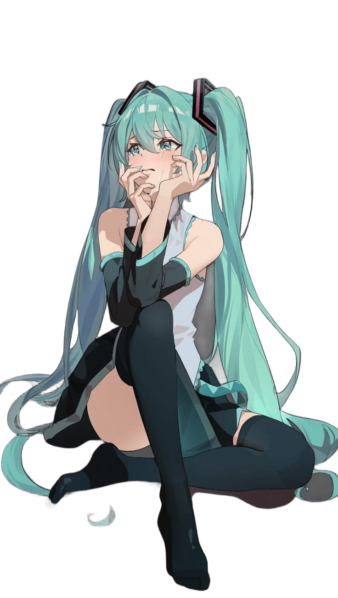
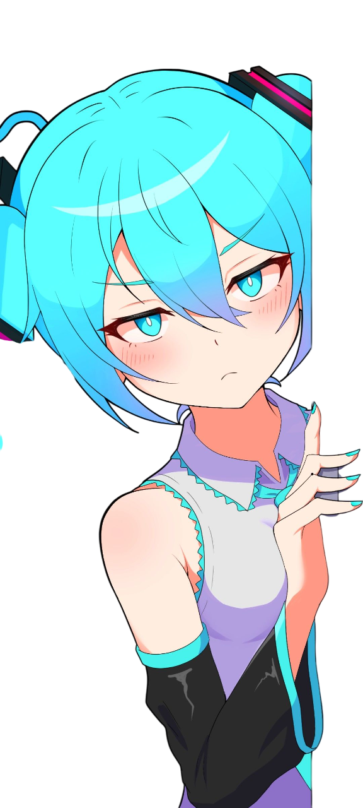

I'm Egor...
Beginner Full-stack developer



My Skils
Frameworks: .NET 8, .NET 9
Tools: Visual Stuio and VS code
Mainly working with DB
Confident knowledge of HTML and work with vs codes
Confident knowledge of CSS and basic knowledge of adaptive layout
Basic knowledge of language syntax
Confident work with branches and commits
I also had experience in network and system administration (Windows, Linux, Cisco), C++ and C, mobile development on Kotlin and GameDev (Unity, C#)
I completed in-depth Accounting and 1C
-work with typical configurations: 1C:ERP, 1C:Accounting, 1C:UPP
-development of non-standard configurations (Diploma - more details in the portfolio)
After college, I worked mainly with 1C (more details in the work experience)
At the moment, I am well acquainted with typical 1C configurations (1C:ERP, 1C:Accounting, 1C:UPP, etc.) and have commercial experience working with them.
I am studying Frontend development in depth (HTML, CSS, JS, Php, Node.js)
I am studying at SUSU at the department "Institute of Open and Distance Education" in the direction 09.03.01 Computer Science and Computer Engineering in absentia and will complete my studies in 2030.